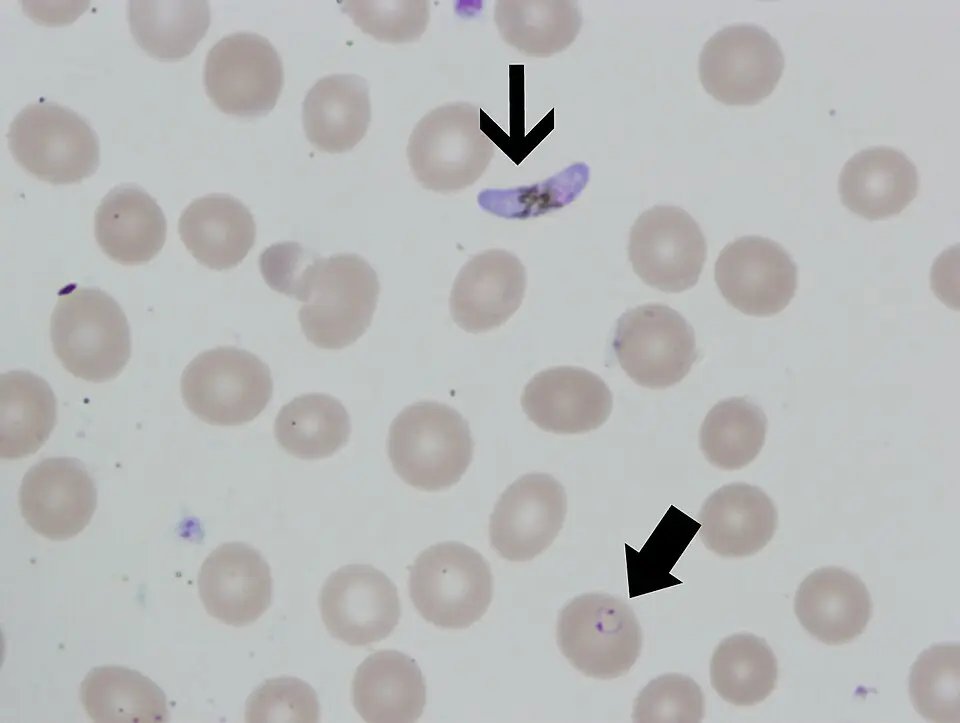

DX.6 — Paludisme (fièvre au retour de voyage)
Abréviations. AUFI est l'abréviation de fièvre aiguë indifférenciée (acute undifferentiated febrile illness). AIPS est l'abréviation de information professionnelle suisse des médicaments. ATC est l'abréviation de classification anatomique, thérapeutique et chimique. CIM-11 est l'abréviation de Classification internationale des maladies, onzième révision. OMS est l'abréviation de Organisation mondiale de la santé. TDR est l'abréviation de test de diagnostic rapide. PCR est l'abréviation de réaction en chaîne de la polymérase. CRP est l'abréviation de protéine C réactive. HRP-2 est l'abréviation de protéine 2 riche en histidine, antigène de P.11 falciparum. QTc est l'abréviation de intervalle QT corrigé. QT est l'abréviation de durée de la repolarisation ventriculaire à l'ECG. LDH est l'abréviation de lactate déshydrogénase. ECG est l'abréviation de électrocardiogramme. G6PD est l'abréviation de glucose-six-phosphate déshydrogénase. ALAT est l'abréviation de alanine aminotransférase. ASAT est l'abréviation de aspartate aminotransférase. DFGe est l'abréviation de débit de filtration glomérulaire estimé. OFSP est l'abréviation de Office fédéral de la santé publique. LAMal est l'abréviation de loi fédérale sur l'assurance-maladie. LAA est l'abréviation de loi fédérale sur l'assurance-accidents. LAI est l'abréviation de loi fédérale sur l'assurance-invalidité. SI est l'abréviation de Système international d'unités. SCAR est l'abréviation de réactions cutanées sévères. IRM est l'abréviation de imagerie par résonance magnétique. AVC est l'abréviation de accident vasculaire cérébral. IV est l'abréviation de intraveineuse. IC95 % désigne : intervalle de confiance, calculé à un niveau de confiance de quatre-vingt-quinze pour cent. TDM est l'abréviation de tomodensitométrie. DRESS est l'abréviation de réaction médicamenteuse avec éosinophilie et symptômes systémiques.
1. Définition
Le paludisme est une maladie parasitaire due à un Plasmodium, transmise par la piqûre de l'anophèleAnophèle : moustique vecteur du paludisme. Il pique surtout la nuit. femelle. Le parasite détruit les globules rouges. Toute fièvre après un séjour en zone d'endémie est un paludisme jusqu'à preuve du contraire1.
L'espèce P. falciparumPlasmodium falciparum adhère aux capillaires. est la plus grave, car elle cause le neuropaludisme. Les espèces P. vivax et P. ovalePlasmodium vivax et Plasmodium ovale : ils forment des hypnozoïtes dormants dans le foie. Ils rechutent des mois plus tard si l'on n'élimine pas ces formes. rechutent par leurs hypnozoïtesHypnozoïte : forme dormante du parasite dans les hépatocytes. Elle cause les rechutes de P. vivax et P. ovale. L'AIPS précise que Riamet n'agit pas sur elle..
2. Épidémiologie (Suisse, puis Europe)
Europe. Le paludisme (96/455, 21,1 %) et la dengue (92/455) dominent les AUFI des voyageurs fébriles et un test rapide les diagnostique (Camprubí-Ferrer 2022)1.
Suisse. P. falciparum, surtout importé d'Afrique de l'Ouest, cause presque tous les cas et tous les décès sauf un (Giannone 2022)4.
Gravité. Elle croît avec l'âge (Kurth 2017)12 et se mesure par la létalité (Sha 2026)3, d'où le test devant toute fièvre au retour.
| Cause | Effectif | Part des 455 voyageurs avec AUFI (%) |
|---|---|---|
| Infections virales (dont 108 arboviroses)14123 | 132/455 | 29,0 % |
| Paludisme | 96/455 | 21,1 % |
| Infections bactériennes | 82/455 | 18,0 % |
| Autres situations à 1 mois de suivi14123 | 136/455 | 29,9 % |
| Indicateur | Valeur (effectif, ou part de la population de référence) | Population de référence |
|---|---|---|
| Dengues parmi les arboviroses des voyageurs européens avec AUFI (Camprubí-Ferrer 2022)1 | 92/108 (85,2 %) | 108 arboviroses |
| Cas de paludisme déclarés à l'OFSP en Suisse, de 1990 à 2019, avec 52 décès (Giannone 2022)4 | 8 439 cas | tous les cas déclarés en Suisse |
| Année depuis laquelle le paludisme est à déclaration obligatoire en Suisse (Eperon 2017)10 | 1974 | tous les cas déclarés en Suisse |
| Part de P. vivax parmi les cas suisses depuis 2014 (%) (Eperon 2017)10 | 36 % | cas suisses depuis 201410 |
| Part de P. vivax parmi les cas suisses de la décennie précédente (%) (Eperon 2017)10 | 11 % | cas suisses de la décennie précédente |
| Décès parmi les patients européens avec paludisme grave, cohorte TropNet de 2006 à 2014 (Kurth 2017)12 | 3 décès | 185 patients |
| Survie à 28 jours dans la cohorte TropNet (%) (Kurth 2017)12 | 98,4 % | 185 patients |
| Neuropaludisme chez les patients de 60 ans ou plus (%) (Kurth 2017)12 | 54 % | patients de 60 ans ou plus12 |
| Neuropaludisme chez les patients plus jeunes (%) (Kurth 2017)12 | 20 % | patients de moins de 60 ans12 |
| Létalité du paludisme grave dans une revue parapluie (%, IC95 % 4,0 à 6,2) (Sha 2026)3 | 5,1 % | patients avec paludisme grave des revues incluses |
3. Physiopathologie
La cascade va du niveau moléculaire au niveau clinique, en quatre temps.
Amorce (moléculaire). L'anophèle injecte des sporozoïtes, qui gagnent le foie en quelques minutes. Chez P. vivax et P. ovale, certains sporozoïtes deviennent des hypnozoïtesHypnozoïte : forme dormante du parasite dans les hépatocytes. Elle cause les rechutes de P. vivax et P. ovale. L'AIPS précise que Riamet n'agit pas sur elle. dormants.
Développement (cellulaire). Dans les hépatocytes, le parasite se multiplie puis envahit les globules rouges. Il y mûrit en schizonteSchizonte : forme du parasite dans le globule rouge, qui éclate et libère les mérozoïtes ; l'éclatement déclenche l'accès fébrile.. L'éclatement du globule libère des mérozoïtes et des cytokines : l'accès fébrile apparaît.
Installation (tissulaire). Le globule parasité de P. falciparum se fixe aux capillaires. La microcirculation s'obstrue : cerveau, rein et poumon souffrent. L'hemolyseDestruction des globules rouges : le parasite les fait éclater. Elle cause anémie, ictère et urines foncées. cause l'anémie et l'ictereColoration jaune des conjonctives et de la peau par excès de bilirubine, liée à l'hémolyse et à l'atteinte hépatique..
Maintien et clinique. Sans traitement, la parasitémie augmente. Elle mène au neuropaludismeNeuropaludisme : atteinte cérébrale du paludisme à P. falciparum, avec trouble de conscience ou convulsions. Urgence vitale., à l'hypoglycemieGlycémie basse : le parasite consomme du glucose ; la quinine augmente l'insuline. Elle est fréquente dans le paludisme grave., au choc et à l'insuffisance rénale. Les hypnozoïtes expliquent les rechutes tardives.
| Lésion ou perturbation | Exploration qui la montre | Thérapeutique qui la corrige (mécanisme) |
|---|---|---|
| Parasites dans les globules rouges | Frottis et goutte épaisseFrottis et goutte épaisse : étalements de sang colorés au Giemsa, lus au microscope. Le frottis identifie l'espèce et mesure la parasitémie., TDRTest de diagnostic rapide : recherche d'antigènes du parasite sur une goutte de sang, résultat en quelques minutes. Il ne remplace pas le frottis1. | Riamet® ou Malarone® : tuent les formes sanguines |
| Obstruction capillaire, paludisme grave | Examen neurologique, lactate, créatinine | artésunate par voie intraveineuse : action schizonticide rapide |
| Hypnozoïtes hépatiques (P. vivax, P. ovale) | PCR ou frottis avec espèce | primaquine : élimine les formes hépatiques ; Riamet n'agit pas sur elles6 |
| Hémolyse | Hémoglobine, bilirubine, LDH | Traitement antiparasitaire ; transfusion selon l'anémie |
4. Démarche diagnostique
Le médecin traite toute fièvre au retour d'une zone d'endémie comme un paludisme possible. Il exclut le paludisme et la dengue en premier : des tests rapides les détectent1.
Étape 1 : écarter les drapeaux rouges. Chaque drapeau est cliquable.
| Drapeau rouge | Diagnostic associé | Signe ou examen qui tranche | Piège |
|---|---|---|---|
| 🚩 Trouble de la conscience ou convulsionsIls traduisent un neuropaludisme à P. falciparum. L'obstruction cérébrale tue en quelques heures sans traitement parentéral. | Neuropaludisme | Frottis positif à P. falciparum | Attribuer la confusion à la fièvre |
| 🚩 Détresse respiratoire ou chocIls traduisent une défaillance d'organe. Ils imposent les soins intensifs et un traitement intraveineux. | Paludisme grave, sepsis associé | Saturation, lactate, hémocultures | Oublier une co-infection bactérienne |
| 🚩 HypoglycémieLe parasite consomme le glucose. Une glycémie basse impose une correction immédiate. | Paludisme grave | Glycémie capillaire | Passer à côté chez l'enfant |
| 🚩 Ictère, urines foncées, oligurieIls traduisent hémolyse massive et atteinte rénale ou hépatique : critères de gravité. | Paludisme grave | Bilirubine, créatinine, hémoglobine | Confondre avec une hépatite |
| 🚩 Saignement ou thrombopénie marquéeUne coagulopathie complique le paludisme grave. Elle exige un bilan de coagulation. | Paludisme grave, dengue | Plaquettes, coagulation | Attribuer à la dengue seule |
Étape 2 : sans drapeau rouge, il faut procéder par étapes.
- Le médecin interroge sur le voyage : zone, durée, prophylaxie prise.
- Il fait le frottis, la goutte épaisse et le TDR le jour même1.
- Il répète ces tests si le premier résultat est négatif et si la suspicion reste forte.
- Il recherche la dengue et d'autres causes : arboviroses, infections bactériennes.
- Il hospitalise si P. falciparum, si forme grave ou si le suivi est impossible.
5. Anamnèse ciblée et drapeaux rouges
Pour le paludisme, la fenêtre Questions de l'anamnèse détaille chaque question, sa raison et la décision qu'elle change.
Drapeaux rouges actionnables. Trouble de conscience, détresse respiratoire, choc, hypoglycémie ou ictère imposent l'urgence, les soins intensifs et un traitement intraveineux. Un déficit neurologique focal impose une imagerie cérébrale et l'avis de l'infectiologue. Une femme enceinte ou un enfant fébrile au retour d'une zone d'endémie reçoit un frottis le jour même.
6. Examen physique ciblé, région par région
Le médecin décrit d'abord le normal, puis le pathologique. Aucun signe n'est spécifique du paludisme ; la valeur diagnostique reste qualitative.
Pour le paludisme, l'examen ciblé suit l'ordre ci-dessous, et chaque fenêtre donne le normal, le signe à rechercher, sa technique et son aspect. Les temps de l'examen sont : Constantes, Conscience et neurologie, Peau et muqueuses, Abdomen, Poumons et Reins et urines.
7. Approche syndromique
7.1 Syndrome fébrile palustre
| Signes fonctionnels | Signes physiques (geste de recherche) (°C) | Mécanisme |
|---|---|---|
| Fièvre, frissons, sueursTriade de l'accès : frisson, chaleur, sueurs. Elle suit l'éclatement des globules rouges., céphalée et myalgiesDouleurs de la tête et des muscles, liées aux cytokines libérées. | Température au thermomètre tympaniqueSonde dans le conduit auditif, pavillon tiré vers l'arrière. Normal : moins de 38 °C. Pathologique : plus de 38 °C. ; rate palpéePalper l'hypocondre gauche en inspiration profonde. Normal : non palpable. Pathologique : bord palpable. | L'éclatement du schizonte libère des cytokines qui élèvent le point de consigne thermique. |
7.2 Syndrome d'hémolyse
| Signes fonctionnels | Signes physiques (geste de recherche) | Mécanisme |
|---|---|---|
| Asthénie, dyspnée d'effort, urines foncées | Pâleur conjonctivale et ictèreÉcarter la paupière inférieure. Normal : muqueuse rosée. Pathologique : pâle ou jaune. ; biologie : hémoglobine, bilirubine, LDH | Le parasite détruit les globules rouges ; la bilirubine monte. |
7.3 Syndrome de gravité (paludisme grave)
| Signes fonctionnels | Signes physiques (geste de recherche) | Mécanisme |
|---|---|---|
| Somnolence, convulsions, vomissements répétés, dyspnée | GlasgowTrois sous-scores : yeux, parole, motricité. Normal : 15. Pathologique : moins de 15. ; polypnée comptée une minute ; pression artérielle ; glycémie | L'adhérence des globules parasités obstrue les capillaires cérébraux, pulmonaires et rénaux. |
8. Diagnostic positif et critères
Le diagnostic positif est parasitologique : les Plasmodium sont vus au frottis ou à la goutte épaisse, ou détectés par TDR ou PCR1.
| Constat clinique ou biologique | Suffit ? | Conduite |
|---|---|---|
| Frottis ou goutte épaisse positif | Oui | Préciser l'espèce et la parasitémie. |
| TDR positif | Oui, avec frottis de confirmation | Préciser l'espèce et la parasitémie. |
| Fièvre au retour d'une zone d'endémie | Non | Tester : la clinique seule ne suffit pas. |
| Thrombopénie, CRP élevée, cytolyse | Non | Elles orientent mais ne prouvent pas. |
| Premier frottis négatif | Pas d'exclusion | Répéter si la suspicion reste forte. |
Classification de la gravité
Le paludisme est grave s'il existe un trouble de conscience, des convulsions, une détresse respiratoire, un choc, un ictère, une hypoglycémie, une insuffisance rénale, une anémie sévère ou un saignement. Selon l'OMS (2023), une hyperparasitémie de 10 % ou plus des globules rouges est un critère de gravité ; de 4 à 10 %, c'est une hyperparasitémie non compliquée13. Une créatinine supérieure à 3 mg/dL, une oligo-anurie, un lactate d'au moins 5 mmol/L et une confusion prédisent la forme critique13. L'AIPS contre-indique Riamet® en cas de paludisme grave selon la définition de l'OMS6.
9. Examens complémentaires
9.a Gold standard
Le gold standard est l'examen microscopique du frottis et de la goutte épaisse : il identifie l'espèce et mesure la parasitémie11. Son interprétation exige un opérateur expert : hors centre spécialisé, elle est peu fiable11. Le TDR à antigène HRP-2 a un rapport de vraisemblance négatif de 0,08 pour P. falciparum11. Chez un voyageur fébrile d'Afrique subsaharienne, le TDR HRP-2 à trois bandes oriente la décision11. La probabilité de paludisme est alors de 1,1 % après un test négatif et de 97 % après un test positif11. Le TDR reste moins fiable pour P. malariae et P. ovale.
La fenêtre Frottis mince coloré au Giemsa montre le cliché brut, puis sa copie annotée et sa lecture guidée.
9.b Première intention
Pour le paludisme, chaque examen du tableau « Examens de base : résultat, signification, conduite » ouvre une fenêtre, qui précise les valeurs, l'interprétation et les pièges. Les examens concernés sont : Frottis et goutte épaisse, TDR ; Formule sanguine, plaquettes ; Glycémie, créatinine, ALAT, ASAT, bilirubine, LDH, lactate et Hémocultures, test de dengue.
9.c Alternatives
Pour le paludisme, la fenêtre Examens rassemble le tableau détaillé.
9.d Deuxième intention
Le médecin prescrit un ECG avant Riamet ou quinine (QTc) et un dosage de la G6PD avant primaquine9. Si le paludisme reste négatif après plusieurs tests, il cherche une autre cause : dengue, chikungunya, bactérie. Des tests précoces peuvent être faussement négatifs : il faut répéter9. Dans le cas discordant, où le TDR est positif et le frottis négatif, il confirme par PCR.
10. Arbre décisionnel
- Si le patient a de la fièvre au retour d'une zone d'endémie → le médecin fait frottis, goutte épaisse et TDR le jour même1.
- Si le patient a un trouble de conscience, un choc, une détresse respiratoire, une hypoglycémie ou un ictère → c'est un paludisme grave : soins intensifs et artésunate intraveineux5.
- Si P. falciparum est non compliqué → le patient est hospitalisé pour observation et reçoit Riamet® ou Malarone®6.
- Si P. vivax ou P. ovale → traiter l'accès sanguin ; ajouter un traitement contre les hypnozoïtes après dosage de la G6PD.
- Si frottis négatif et suspicion forte → répéter les tests et chercher la dengue ou une autre cause1,9.
11. Prise en charge selon les recommandations suisses
11.A But thérapeutique
Le traitement vise à tuer tous les parasites sanguins, à éviter l'évolution vers la forme grave et à prévenir la rechute1. Le but chiffré est une cure orale complète de 3 jours pour l'accès non compliqué (24 comprimés de Riamet)6. Dans la forme grave, il faut au moins 24 h d'artésunate intraveineux, suivies d'une cure orale de 3 jours5. Pour P. vivax et P. ovale, le médecin doit aussi éliminer les formes hépatiques.
11.B Moyens
Les doses viennent de l'AIPS suisse de chaque spécialité, citée avec sa propre fiche. L'AIPS ne contient ni l'artésunate, ni la quinine intraveineuse, ni la primaquine. Pour ces trois molécules, le texte précise la dose de la recommandation OMS du 10.09.20265 et la relie à l'AIPS d'une molécule voisine.
Urgence — conduite chronologique : le paludisme grave exige ces gestes dans cet ordre.
- Le médecin pose un abord veineux, mesure la glycémie, le lactate et la créatinine, réalise un ECG et corrige l'hypoglycémie.
- Il débute l'artésunate par voie intraveineuse sans attendre l'espèce, car l'OMS recommande au moins 24 h de traitement parentéral, puis une cure orale complète de 3 jours5.
- La recommandation OMS du 10.09.2026 prévoit 2,4 mg/kg d'artésunate par dose, par voie intraveineuse ou intramusculaire, pendant au moins 24 h et jusqu'à la tolérance orale5. L'artésunate intraveineux est absent de l'AIPS dans le corpus suisse consulté ; l'accès passe par importation ou par un centre de référence en médecine tropicale. Le relais oral complète ensuite le traitement par une cure entière d'une association à base d'artémisinine5. L'enfant de moins de 20 kg reçoit 3 mg/kg d'artésunate5. Un spécialiste (médecine tropicale, infectiologie) valide la prescription, et l'infectiologue avec la pharmacie hospitalière organise la disponibilité de l'artésunate en Suisse.
- L'artésunate raccourcit la clairance parasitaire ainsi que la durée du séjour en soins intensifs et à l'hôpital, comparé à la quinine, chez des patients européens2.
- La quinine reste l'alternative si l'artésunate manque. L'OMS (version du 10.09.2026) prévoit une charge de 20 mg/kg de sel de quinine en 4 h, puis 10 mg/kg de sel toutes les 8 h5. La quinine est absente de l'AIPS dans le corpus suisse consulté ; l'accès passe par importation ou par un centre de référence en médecine tropicale. La surveillance porte sur la glycémie et l'ECG, car la quinine allonge le QTc et provoque l'hypoglycémie.
- Le médecin transfère le patient en soins intensifs et demande l'avis de l'infectiologue.
- Il surveille l'hémolyse après le traitement12.
Hors urgence : l'accès non compliqué à P. falciparum se traite ainsi.
- Mesures générales. Le médecin hospitalise le patient pour la première dose et l'hydrate. Il prescrit du paracétamol (Dafalgan®) : 1 g par prise, avec 4 à 8 h d'intervalle, au maximum 4 g par jour chez l'adulte de plus de 50 kg18. Le paracétamol est contre-indiqué en cas de troubles hépatiques graves ou de maladie de Gilbert18. Le comprimé de 1 g ne convient pas à un patient de moins de 50 kg, car il expose au surdosage18.
Traitement pharmacologique.
- En première intention, Riamet® associe artéméther et luméfantrine. L'adulte de 35 kg ou plus doit prendre 4 comprimés au diagnostic, 4 comprimés 8 h plus tard, puis 4 comprimés deux fois par jour pendant 2 jours6. La prise se fait avec un aliment ou une boisson contenant des lipides, comme le lait6. Il peut réduire l'efficacité des contraceptifs hormonaux, donc la patiente ajoute une contraception non hormonale6. Les recommandations suisses de 2023 placent cette association en première ligne8. Elles prolongent la cure à 5 jours au lieu de 3 ; ce schéma sort de l'AIPS et se valide avec un spécialiste (médecine tropicale)19.
- En alternative, Malarone® associe atovaquone et proguanil : l'adulte de plus de 40 kg prend 4 comprimés une fois par jour pendant 3 jours consécutifs, avec un repas ou du lait15.
- Si la souche est sensible à la chloroquine, Plaquenil® donne 800 mg, puis 400 mg 6 à 8 h plus tard, puis 400 mg par jour pendant 2 jours16.
- La doxycycline s'associe à un schizonticide rapide : l'AIPS prévoit 200 mg par jour pendant au moins 7 jours, toujours avec la quinine17. Elle ne doit pas être administrée pendant la grossesse, sauf nécessité absolue ; avant 12 ans, elle peut colorer définitivement les dents17.
- Pour P. vivax et P. ovale, la primaquine élimine les hypnozoïtes après l'accès, et le médecin dose d'abord la G6PD. La recommandation OMS du 10.09.2026 indique 0,5 mg/kg de primaquine par jour pendant 14 jours5. Elle admet 1 mg/kg de primaquine par jour pendant 7 jours si l'activité G6PD atteint au moins 70 %5. En cas de déficit, elle propose 0,75 mg/kg de primaquine une fois par semaine pendant 8 semaines, sous surveillance étroite5. La primaquine est contre-indiquée pendant la grossesse et chez la femme qui allaite un nourrisson de moins d'un mois5. La primaquine est absente de l'AIPS dans le corpus suisse consulté. Elle n'était pas commercialisée en Suisse selon une analyse de 201710 : l'infectiologue organise son obtention et un spécialiste (médecine tropicale, infectiologie) valide la prescription.
| Médicament | Dose, voie et durée | Source |
|---|---|---|
| Riamet® (n° 54594) | 4 comprimés au diagnostic, à 8 h, puis 2 fois par jour pendant 2 jours, par voie orale avec un repas ou du lait6 | AIPS |
| Malarone® (n° 54150) | 4 comprimés en une prise par jour pendant 3 jours, par voie orale avec un repas15 | AIPS |
| Plaquenil® (n° 53831) | 800 mg, puis 400 mg 6 à 8 h plus tard, puis 400 mg par jour pendant 2 jours, par voie orale16 | AIPS |
| Doxycyclin-Mepha (n° 65952) | 200 mg par jour pendant au moins 7 jours, par voie orale, avec la quinine17 | AIPS |
| Dafalgan® (n° 47503) | 1 g par prise, au maximum 4 g par jour, par voie orale18 | AIPS |
| Artésunate | Artésunate : 2,4 mg/kg par dose, par voie intraveineuse, pendant au moins 24 h et jusqu'à la tolérance orale5 | OMS 10.09.2026 ; pas d'AIPS dans le corpus suisse consulté |
| Quinine | Quinine : 20 mg/kg de sel en 4 h, puis 10 mg/kg de sel toutes les 8 h, par voie intraveineuse5 | OMS 10.09.2026 ; pas d'AIPS dans le corpus suisse consulté |
| Primaquine | Primaquine : 0,5 mg/kg par jour pendant 14 jours, ou 1 mg/kg par jour pendant 7 jours si G6PD ≥ 70 %, par voie orale5 | OMS 10.09.2026 ; pas d'AIPS dans le corpus suisse consulté |
Sécurité d'emploi de Riamet
L'AIPS explique pourquoi Riamet ne convient pas au paludisme grave. La biodisponibilité de l'artéméther, et surtout celle de la luméfantrine, devient aléatoire lors d'une parasitémie élevée ou d'une prise de nourriture insuffisante6. Riamet n'a pas été évalué en prophylaxie, donc il n'est pas indiqué dans ce cas6. Il est contre-indiqué avec les inducteurs puissants du CYP3A4 : rifampicine, carbamazépine, phénytoïne et millepertuis6. Il l'est aussi avec les médicaments métabolisés par le CYP2D6, comme le flécaïnide, le métoprolol et l'imipramine6. Il l'est enfin avec les médicaments qui allongent le QTc, comme les macrolides, les fluoroquinolones et les antifongiques azolés6. Après la quinine ou la méfloquine, le médecin surveille l'ECG ou les apports alimentaires, et après l'halofantrine il attend au moins un mois6. En cas de surdosage, il surveille l'ECG et les électrolytes6.
Sécurité d'emploi de Malarone
Des réactions cutanées sévères (SCAR), dont le syndrome de Stevens-Johnson, le DRESS et l'érythème polymorphe, imposent l'arrêt immédiat du traitement et le choix d'une alternative15. Le patient qui a présenté une telle réaction ne doit plus recevoir Malarone15. Le proguanil peut potentialiser les anticoagulants de type coumarine, donc le médecin reste prudent lorsqu'il débute ou arrête un antipaludique chez un patient anticoagulé15. Le métoclopramide, la tétracycline, la rifampicine et la rifabutine réduisent nettement les concentrations plasmatiques d'atovaquone15.
Sécurité d'emploi de Plaquenil
Plaquenil est contre-indiqué en cas de déficit en G6PD, d'anémie hémolytique, de porphyrie, de rétinopathie préexistante ou de champ visuel réduit. Il l'est aussi en cas de myasthénie, de psoriasis et chez l'enfant de moins de 6 ans16. Il peut abaisser le seuil convulsif, donc le médecin reste prudent chez le patient épileptique et lors d'une association avec la méfloquine16. Il n'offre aucune protection au nourrisson allaité, qui nécessite sa propre chimioprophylaxie16.
Traitement non pharmacologique. Le médecin prescrit hydratation, repos et nutrition ; la reprise alimentaire précoce favorise l'absorption de Riamet6.
| Situation | Conduite |
|---|---|
| Grossesse | Riamet : ne doit pas être administré au premier trimestre si un autre antipaludique efficace existe ; aux 2e et 3e trimestres, seulement si le bénéfice l'emporte6. Malarone® : seulement si le bénéfice maternel l'emporte sur le risque15. Plaquenil® : rapport bénéfice-risque en général favorable dans le paludisme16. Doxycycline : ne doit pas être administrée, sauf nécessité absolue17. |
| Allaitement | Riamet : la femme qui allaite ne devrait pas le prendre ; elle ne reprend pas l'allaitement avant le 28e jour, sauf bénéfice supérieur au risque6. Malarone® : déconseillé15. Doxycycline : ne doit pas être administrée ; arrêter l'allaitement si elle est nécessaire17. Plaquenil® : peser l'arrêt de l'allaitement ou du traitement, car le surdosage est dangereux chez le nourrisson16. |
| Enfant | Riamet dès 5 kg : 1 comprimé (5 à moins de 15 kg), 2 (15 à moins de 25 kg), 3 (25 à moins de 35 kg) aux mêmes temps6. Malarone® pédiatrique dès 5 kg15. |
| Insuffisance rénale | Riamet : contre-indiqué en cas d'insuffisance sévère6. Malarone® : préférer un autre médicament si la clairance est inférieure à 30 mL/min ; contre-indiqué en prévention dans ce cas15. |
| Insuffisance hépatique | Riamet : contre-indiqué si elle est sévère6. |
| Sujet âgé | Riamet et Malarone® : aucun ajustement posologique615. |
Social et professionnel. Le médecin remplit la déclaration clinique à l'OFSP via le médecin cantonal dans la semaine7. L'arrêt de travail dépend de l'évolution, et la LAMal couvre les soins. Le patient ne conduit pas en cas de vertiges (AIPS de Riamet)6.
11.C Surveillance
Le médecin suit la température, la parasitémie, la glycémie, la créatinine et l'hémoglobine7. Si l'état s'aggrave sous Riamet, il change de traitement, réalise un ECG et corrige les électrolytes6. Après un traitement intraveineux, il surveille l'hémolyse tardive.
11.D Pronostic et sortie
Le pronostic est favorable si le traitement est précoce12. La survie à 28 jours atteint 98,4 % dans la cohorte TropNet12. L'hémolyse tardive après artésunate touche 19 patients sur 70 (27 %) : un suivi est donc nécessaire1214. La sortie exige l'apyrexie, une alimentation orale, un traitement oral pris et un suivi organisé.
12. Prévention
Primaire. Avant le voyage, le médecin conseille la protection contre les piqûres : moustiquaire, répulsif et vêtements couvrants. Il prescrit ensuite la prophylaxieMédicament pris avant, pendant et après le séjour pour prévenir l'accès. selon la zone, avec les doses de chaque AIPS.
- Avec Malarone®, le voyageur doit prendre 1 comprimé par jour, à débuter 1 à 2 jours avant l'entrée en zone d'endémie et à poursuivre 7 jours après le départ15.
- Avec Plaquenil®, le voyageur doit prendre 400 mg une fois par semaine, toujours le même jour, 2 semaines avant l'entrée en zone et 8 semaines après, si le Plasmodium est sensible16.
- Avec la doxycycline, le voyageur doit prendre 100 mg une fois par jour, de 1 à 2 jours avant le départ jusqu'à 4 semaines après le retour17. Elle ne doit pas être administrée pendant la grossesse, sauf nécessité absolue, ni pendant l'allaitement ; avant 12 ans, elle peut colorer définitivement les dents17.
Le choix par zone suit l'avis du centre de médecine des voyages.
Traitement d'urgence de réserve
Si aucun médecin n'est joignable dans les 24 heures, le voyageur prend Riamet® en stand-byLe voyageur emporte ce traitement et le prend seul (AIPS de Riamet).6.
Secondaire. Le médecin fait un test devant toute fièvre au retour d'une zone d'endémie, même sous prophylaxie1.
Tertiaire. Après P. vivax ou P. ovale, il élimine les hypnozoïtes pour éviter les rechutes, puis il explique au patient quand consulter en urgence.
13. Points clés
Le médecin fait un test par frottis, goutte épaisse et test rapide devant toute fièvre au retour d'une zone d'endémie, le jour même.
Le paludisme représente 21,1 % des fièvres aiguës indifférenciées chez 455 voyageurs européens1.
Un frottis négatif n'exclut pas le diagnostic : le médecin répète le test si la suspicion reste forte.
Le paludisme grave exige l'artésunate intraveineux en soins intensifs ; Riamet y est contre-indiqué.
P. vivax et P. ovale rechutent : un traitement contre les hypnozoïtes suit l'accès, après dosage de la G6PD.
14. Pièges et questions fréquentes à l'examen fédéral suisse
| Question | Réponse | Raison |
|---|---|---|
| Un voyageur fébrile prend une prophylaxie : le paludisme est-il exclu ? | Non : le médecin teste toute fièvre au retour d'une zone d'endémie1. | Même bien prise, une prophylaxie n'exclut pas le paludisme ; une prophylaxie mal prise ne protège pas. |
| Le premier frottis est négatif : que faire ? | Répéter les tests si la suspicion reste forte et chercher la dengue ou une bactérie19. | Des tests précoces peuvent être faussement négatifs ; une seule lame ne suffit pas à exclure le diagnostic. |
| Peut-on traiter un paludisme grave par Riamet® ? | Non : l'AIPS contre-indique Riamet dans le paludisme grave selon l'OMS ; l'artésunate intraveineux est le traitement56. | La forme grave exige un traitement parentéral d'au moins 24 h, puis une cure orale de 3 jours. |
| Quelle dose adulte de Riamet® en 3 jours ? | 4 comprimés au diagnostic, 4 comprimés 8 h plus tard, puis 4 comprimés deux fois par jour pendant 2 jours, soit 24 comprimés6. | La prise avec un aliment contenant des lipides favorise l'absorption du médicament. |
| Riamet® agit-il sur les hypnozoïtes de P. vivax ? | Non : il agit sur les formes sanguines, pas sur les formes hépatiques dormantes6. | Les hypnozoïtes dorment dans le foie et provoquent des rechutes ; un traitement ultérieur est nécessaire. |
| Quelle part des fièvres du voyageur vient du paludisme ? | 21,1 % (96/455) des AUFI dans la cohorte européenne de 20221 ; en Suisse, 8 439 cas ont été déclarés de 1990 à 20194. | Les deux chiffres décrivent deux populations différentes : voyageurs fébriles européens et cas déclarés en Suisse. |
Sources bibliographiques
Questions de l'anamnèse
| Question | Pourquoi elle change la décision |
|---|---|
| Quelle zone, quelle date de retour ?La zone indique l'espèce et les résistances. Le délai depuis le retour limite les causes possibles. | P. falciparum domine certaines zones ; la zone guide le traitement. |
| Une prophylaxie a-t-elle été prise ?Une prophylaxie mal prise ou arrêtée trop tôt ne protège pas. Même bien prise, elle n'exclut pas le paludisme. | La prophylaxie n'exclut pas le diagnostic : on teste quand même. |
| Quel profil de fièvre, frissons, sueurs ?Frissons, fièvre puis sueurs traduisent l'éclatement synchrone des globules. Le profil périodique n'est pas constant. | Il oriente, mais son absence n'exclut rien. |
| Céphalée, vomissements, confusion ?Ils évoquent l'atteinte cérébrale ou le syndrome grave. | Ils imposent l'évaluation de gravité immédiate. |
| Antécédent de paludisme, de G6PD, grossesse ?Ces facteurs changent le choix du médicament : le déficit en G6PD interdit le schéma quotidien de primaquine ; la grossesse limite certains traitements. | Le choix thérapeutique en dépend. |
| Médicaments pris (allongement du QTc, enzymes) ?Riamet est contre-indiqué avec les médicaments qui allongent le QTc et les inducteurs enzymatiques puissants comme la rifampicine (AIPS)6. | Il détermine l'option orale possible. |
Constantes
| Normal | Température inférieure à 38 °C ; pouls 60 à 100/min ; saturation normale. |
|---|---|
| Signes à rechercher (cliquer) | Température et poulsTechnique : thermomètre tympanique ; palper le pouls radial une minute. Valeur : fièvre et tachycardie sont fréquentes mais non spécifiques. Piège : un voyageur afébrile au moment de l'examen peut avoir un paludisme. · Pression artérielle et saturationTechnique : brassard adapté, oxymètre au doigt. Valeur : l'hypotension ou la désaturation signalent un paludisme grave. Piège : une valeur normale n'exclut pas la gravité chez l'enfant. |
Conscience et neurologie
| Normal | Patient éveillé, orienté, sans raideur de nuque. |
|---|---|
| Signes à rechercher (cliquer) | Score de Glasgow et orientationTechnique : évaluer ouverture des yeux, réponse verbale, réponse motrice. Valeur : une baisse signe un neuropaludisme. Piège : penser aussi à la méningite. · Raideur de nuque. |
Peau et muqueuses
| Normal | Peau rose, conjonctives rosées, sans éruption. |
|---|---|
| Signes à rechercher (cliquer) | Pâleur et ictère conjonctivalTechnique : écarter la paupière inférieure à la lumière du jour. Valeur : pâleur = anémie hémolytique ; ictère = hémolyse ou atteinte hépatique. Piège : l'ictère manque au début. · ÉruptionTechnique : inspecter le tronc et les membres. Valeur : une éruption évoque plutôt la dengue ou une autre arbovirose. Piège : le paludisme ne donne pas d'éruption typique. |
Abdomen
| Normal | Foie et rate non palpables. |
|---|---|
| Signes à rechercher (cliquer) | Splénomégalie et hépatomégalieTechnique : palper l'hypocondre gauche et droit en inspiration profonde, patient allongé. Valeur : la rate augmente de volume dans le paludisme. Piège : elle manque dans l'accès récent. |
Poumons
| Normal | Murmure vésiculaire symétrique, sans bruit surajouté. |
|---|---|
| Signes à rechercher (cliquer) | Auscultation : crépitants ou polypnée évoquent l'œdème pulmonaire ou une pneumonie associée. |
Reins et urines
| Normal | Urines claires, diurèse conservée. |
|---|---|
| Signes à rechercher (cliquer) | Urines foncées ou oligurie : hémolyse ou atteinte rénale. |
Frottis mince coloré au Giemsa
Frottis mince coloré au Giemsa. Ce cliché montre un frottis sanguin mince de P. falciparum, coloré au Giemsa, vu à l'objectif à immersion dans un champ microscopique unique.

Lisez d'abord seul ce cliché : cherchez vous-même le signe.
La copie annotée numérote les repères, que la lecture guidée décrit ci-dessous.
- Gamétocyte falciforme (flèche ouverte) : forme sexuée en croissant, pigment brun au centre.
- Trophozoïte en anneau (flèche pleine) : petit anneau violet dans un globule rouge, signe de P. falciparum.
- Un frottis unique négatif n’exclut pas le paludisme : répéter si la suspicion reste forte.
- Le frottis identifie l’espèce et mesure la parasitémie ; le TDR seul ne le remplace pas.
Ce que l'image décide. Des anneaux ou un gamétocyte falciforme confirment un paludisme à P. falciparum : le médecin évalue alors sans délai la gravité et la parasitémie.

Frottis et goutte épaisse, TDR
| Examen (prescription) | Frottis et goutte épaisse, TDR : en urgence, avant tout antibiotique |
|---|---|
| Résultat → signification | Parasites présents : paludisme. Absents : pas d'exclusion si suspicion forte. |
| Conduite | Positif : traiter selon l'espèce et la gravité. Négatif : répéter, chercher une autre cause. |
Formule sanguine, plaquettes
| Résultat → signification | Anémie, thrombopénie : orientation. |
|---|---|
| Conduite | Anémie sévère ou saignement : forme grave. |
Glycémie, créatinine, ALAT, ASAT, bilirubine, LDH, lactate
| Résultat → signification | Valeurs de référence du laboratoire (unités SI). |
|---|---|
| Conduite | Hypoglycémie, insuffisance rénale ou lactate élevé : forme grave. |
Examens
| Situation | Examen | Limite |
|---|---|---|
| Frottis négatif, suspicion forte | PCR pour Plasmodium | Délai de résultat |
| Signes neurologiques | TDM ou IRM cérébrale, ponction lombaire | Ne pas retarder le traitement |
| Grossesse | Frottis et TDR identiques ; éviter l'imagerie par rayons X si possible | Mêmes tests |
| Enfant | Frottis, TDR ; glycémie capillaire | Hypoglycémie fréquente |
| DFGe < 30 mL/min ou allergie aux produits iodés1 | Éviter la TDM avec contraste iodé ; IRM sans gadolinium ou échographie | Risque rénal |
| Dispositif non compatible IRM | TDM sans contraste | IRM contre-indiquée |